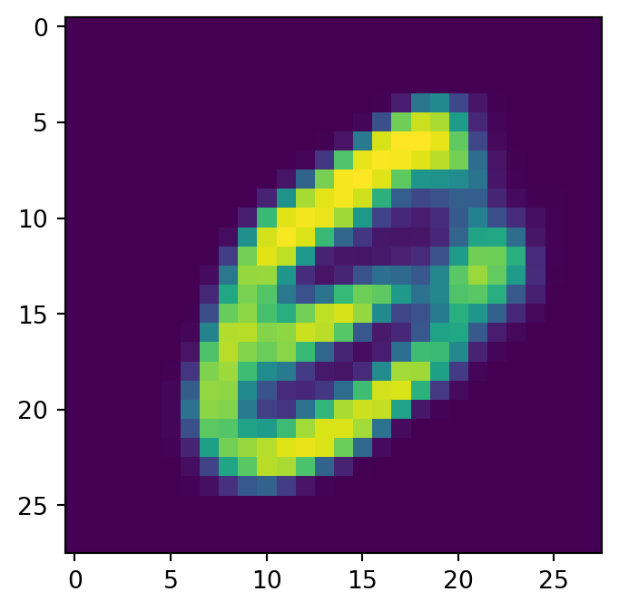

import torch
import torch.nn as nn
import numpy as np
from tqdm import tqdm
from torchvision.utils import save_image, make_gridA Blog Entry on Bayesian Computation by an Applied Mathematician
$$
$$
1 VAE (Kingma and Welling, 2014)
1.1 導入
PyTorch を用いることで詳細を省略し，VAE の構造を概観することとする．
今回は，MNIST データセットを用い，隠れ次元 400 を通じて潜在次元 200 まで圧縮する．
dataset_path = '~/hirofumi/datasets'
DEVICE = torch.device("mps")
batch_size = 100
x_dim = 784
hidden_dim = 400
latent_dim = 200
lr = 1e-3
epochs = 30from torchvision.datasets import MNIST
import torchvision.transforms as transforms
from torch.utils.data import DataLoader
mnist_transform = transforms.Compose([
transforms.ToTensor(),
])
kwargs = {'num_workers': 0, 'pin_memory': True}
train_dataset = MNIST(dataset_path, transform=mnist_transform, train=True, download=True)
test_dataset = MNIST(dataset_path, transform=mnist_transform, train=False, download=True)
train_loader = DataLoader(dataset=train_dataset, batch_size=batch_size, shuffle=True, **kwargs)
test_loader = DataLoader(dataset=test_dataset, batch_size=batch_size, shuffle=False, **kwargs)PyTorch の Dataset と DataLoader は，訓練やテスト用のデータセットの簡単なアクセスと，それに対する iterable オブジェクトを提供する．
1.2 モデルの定義
1.2.1 エンコーダー
エンコーダーはデータを受け取り，２層の全結合隠れ層を通じて，「平均」と「対数分散」の名前がついた計 400 次元の潜在表現を得る．
class Encoder(nn.Module):
def __init__(self, input_dim, hidden_dim, latent_dim):
super(Encoder, self).__init__()
self.FC_input = nn.Linear(input_dim, hidden_dim)
self.FC_input2 = nn.Linear(hidden_dim, hidden_dim)
self.FC_mean = nn.Linear(hidden_dim, latent_dim)
self.FC_var = nn.Linear(hidden_dim, latent_dim)
self.LeakyReLU = nn.LeakyReLU(0.2)
self.training = True
def forward(self, x):
h_ = self.LeakyReLU(self.FC_input(x))
h_ = self.LeakyReLU(self.FC_input2(h_))
mean = self.FC_mean(h_)
log_var = self.FC_var(h_)
return mean, log_var- 1
-
nn.Linearは PyTorch による全結合層 \(y=xA^\top+b\) の実装である． - 2
-
ここまで２層の全結合層にデータを通して，最終的な出力
h_を得ており，次の段階で最終的な潜在表現を得る． - 3
-
最後の隠れ層の出力
h_に関して平均と対数分散という名前のついた最終的な出力を，やはり全結合層を通じて得る（最終層なので活性化なし）．
1.2.2 デコーダー
class Decoder(nn.Module):
def __init__(self, latent_dim, hidden_dim, output_dim):
super(Decoder, self).__init__()
self.FC_hidden = nn.Linear(latent_dim, hidden_dim)
self.FC_hidden2 = nn.Linear(hidden_dim, hidden_dim)
self.FC_output = nn.Linear(hidden_dim, output_dim)
self.LeakyReLU = nn.LeakyReLU(0.2)
def forward(self, x):
h = self.LeakyReLU(self.FC_hidden(x))
h = self.LeakyReLU(self.FC_hidden2(h))
x_hat = torch.sigmoid(self.FC_output(h))
return x_hat- 1
-
最後の出力は，エンコーダーとは違い，シグモイド関数を通して確率分布
x_hatとする．
1.2.3 モデル
VAE はエンコーダーとデコーダーを連結し，１つのニューラルネットワークとして学習する．
class Model(nn.Module):
def __init__(self, Encoder, Decoder):
super(Model, self).__init__()
self.Encoder = Encoder
self.Decoder = Decoder
def reparameterization(self, mean, var):
epsilon = torch.randn_like(var).to(DEVICE)
z = mean + var*epsilon
return z
def forward(self, x):
mean, log_var = self.Encoder(x)
z = self.reparameterization(mean, torch.exp(0.5 * log_var))
x_hat = self.Decoder(z)
return x_hat, mean, log_var- 1
- これは サンプリングイプシロン と呼ばれる値である．
- 2
- ここで reparametrization trick を行っている．
- 3
-
入力
xがあったならば，まずエンコーダーに通してmean,log_varを得る． - 4
-
元々
log_varの名前の通り対数分散として扱うこととしていたので，２で割り指数関数に通すことで標準偏差を得る．この平均と標準偏差について reparametrization trick を実行し，デコーダーに繋ぐ． - 5
-
デコーダーではデータの潜在表現
zを受け取り，デコードしたものをx_hatとする． - 6
-
返り値は，デコーダーの出力
x_hatだけでなく，潜在表現mean,log_varも含むことに注意．
encoder = Encoder(input_dim=x_dim, hidden_dim=hidden_dim, latent_dim=latent_dim)
decoder = Decoder(latent_dim=latent_dim, hidden_dim = hidden_dim, output_dim = x_dim)
model = Model(Encoder=encoder, Decoder=decoder).to(DEVICE)- 1
-
.to(DEVICE)により，モデルを M2 Mac の MPS デバイス上に移送している．
1.3 モデルの訓練
最適化には Adam (Kingma and Ba, 2017) を用い，バイナリ交差エントロピー（BCE）を用いる．これは nn.BCELoss に実装がある．
from torch.optim import Adam
BCE_loss = nn.BCELoss()
def loss_function(x, x_hat, mean, log_var):
reproduction_loss = nn.functional.binary_cross_entropy(x_hat, x, reduction='sum')
KLD = - 0.5 * torch.sum(1 + log_var - mean.pow(2) - log_var.exp())
return reproduction_loss + KLD
optimizer = Adam(model.parameters(), lr=lr)ここでの損失関数は，真のデータ x をデコーダーが復元できているかを交差エントロピーで測った reproduction_loss と，潜在表現がどれだけ \(\mathrm{N}_d(0,I_d),d=200\) に近いかを KL 乖離度で測った KLD の和で定義されている．1
VAE の標準的な目的関数 とは違う形をしていることに注意．
1.4 モデルの評価
テスト用データの最初のバッチについて処理し，入力データと出力データを見比べてみる．
model.eval()
with torch.no_grad():
for batch_idx, (x, _) in enumerate(tqdm(test_loader)):
x = x.view(batch_size, x_dim)
x = x.to(DEVICE)
x_hat, _, _ = model(x)
break- 1
- 勾配評価を無効化するコンテクストマネージャーで，メモリの使用を節約できるという．
0%| | 0/100 [00:00<?, ?it/s] 0%| | 0/100 [00:00<?, ?it/s]import matplotlib.pyplot as plt
def show_image(x, idx):
x = x.view(batch_size, 28, 28)
fig = plt.figure()
plt.imshow(x[idx].cpu().numpy())
show_image(x, idx=0)
show_image(x_hat, idx=0)
左が入力で右が出力である．
1.5 データの生成
ここで，エンコーダを取り外してデコーダーからデータを生成する．
損失関数（第 1.3 節）には，潜在空間におけるデータを標準正規分布に近付けるための項が入っていたため，データの潜在表現は極めて標準正規分布に近いとみなすことにする．
すると，潜在表現と同じ次元の正規乱数から，データセットに極めて似通ったデータが生成できるだろう．
with torch.no_grad():
noise = torch.randn(batch_size, latent_dim).to(DEVICE)
generated_images = decoder(noise)
save_image(generated_images.view(batch_size, 1, 28, 28), 'generated_sample.png')
for i in range(4):
show_image(generated_images, idx=i)

2 VQ-VAE (van den Oord et al., 2017)
2.1 導入
DEVICE = torch.device("mps")
batch_size = 128
img_size = (32, 32)
input_dim = 3
hidden_dim = 512
latent_dim = 16
n_embeddings= 512
output_dim = 3
commitment_beta = 0.25
lr = 2e-4
epochs = 50
print_step = 50from torchvision.datasets import CIFAR10
import torchvision.transforms as transforms
from torch.utils.data import DataLoader
mnist_transform = transforms.Compose([
transforms.ToTensor(),
])
kwargs = {'num_workers': 1, 'pin_memory': True}
train_dataset = CIFAR10(dataset_path, transform=mnist_transform, train=True, download=True)
test_dataset = CIFAR10(dataset_path, transform=mnist_transform, train=False, download=True)
train_loader = DataLoader(dataset=train_dataset, batch_size=batch_size, shuffle=True, **kwargs)
test_loader = DataLoader(dataset=test_dataset, batch_size=batch_size, shuffle=False, **kwargs)Files already downloaded and verified
Files already downloaded and verified2.2 モデルの定義
2.2.1 エンコーダー
VQ-VAE は画像への応用を念頭に置いているため，エンコーダーには CNN アーキテクチャ を採用する．
class Encoder(nn.Module):
def __init__(self, input_dim, hidden_dim, output_dim, kernel_size=(4, 4, 3, 1), stride=2):
super(Encoder, self).__init__()
kernel_1, kernel_2, kernel_3, kernel_4 = kernel_size
self.strided_conv_1 = nn.Conv2d(input_dim, hidden_dim, kernel_1, stride, padding=1)
self.strided_conv_2 = nn.Conv2d(hidden_dim, hidden_dim, kernel_2, stride, padding=1)
self.residual_conv_1 = nn.Conv2d(hidden_dim, hidden_dim, kernel_3, padding=1)
self.residual_conv_2 = nn.Conv2d(hidden_dim, hidden_dim, kernel_4, padding=0)
self.proj = nn.Conv2d(hidden_dim, output_dim, kernel_size=1)
def forward(self, x):
x = self.strided_conv_1(x)
x = self.strided_conv_2(x)
x = F.relu(x)
y = self.residual_conv_1(x)
y = y+x
x = F.relu(y)
y = self.residual_conv_2(x)
y = y+x
y = self.proj(y)
return y3 参考文献
本稿は，Minsu Jackson Kang 氏 による チュートリアル を参考にした．
VAE には数々の変種があるが，その PyTorch による簡単な実装は Anand K Subramanian の このレポジトリ にリストアップされている．
VAE の潜在表現は t-SNE などを用いて可視化でき，(Murphy, 2023, p. 635) の例などでも，潜在空間において手書き数字がクラスごとによく分離されていることが確認できる．
References
Kingma, D. P., and Ba, J. (2017). Adam: A method for stochastic optimization.
Kingma, D. P., and Welling, M. (2014). Auto-encoding variational bayes. In International conference on learning representations,Vol. 2.
Murphy, K. P. (2023). Probabilistic machine learning: Advanced topics. MIT Press.
van den Oord, A., Vinyals, O., and Kavukcuoglu, K. (2017). Neural discrete representation learning. In Advances in neural information processing systems,Vol. 30.
Footnotes
なお，
mean.pow(2)は Julia のmean.^2に同じ．↩︎